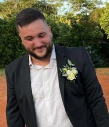

Curriculum Vitae & Biography
A complete printable PDF version of my Curriculum Vitae is available for download.
Short Biography
Originally from Brazil, I completed my Ph.D. in Mathematics at the University of São Paulo (IME–USP) in 2020 (supervised by Llohann D. Sperança and Marcos M. Alexandrino), after undergraduate and master's studies at the University of Campinas (IMECC–UNICAMP). My doctoral thesis on metric deformations and symmetries received the CAPES Thesis Award and the Carlos Gutiérrez Thesis Prize.
Following postdoctoral appointments at the University of Fribourg (SPP 2026, with Anand Dessai), IMECC–UNICAMP (with Lino Grama), and the University of Miami / IMSA (with Ludmil Katzarkov), I joined the International Center for Mathematical Sciences – Sofia (ICMS-Sofia) at the Bulgarian Academy of Sciences (IMI-BAS) as an Established Researcher (R3). My current research centers on the Theory of Atoms, quantum connections, equivariant birational geometry, non-Kähler mirror symmetry, and the GEOATOMS computational platform.

Academic Appointments
2022/09603-9).Education
Advisor: Prof. Llohann Dallagnol Sperança · Co-advisor: Prof. Marcos Martins Alexandrino da Silva.
Advisor: Prof. Rafael de Freitas Leão.
Prizes & Distinctions
Research Grants & Fellowships
2023/14316-1
2022/09603-9 (and CAPES Postdoctoral Fellowship, 2022)
2017/24680-1
Languages
Portuguese (native), English (fluent), French (advanced), and Spanish (advanced).